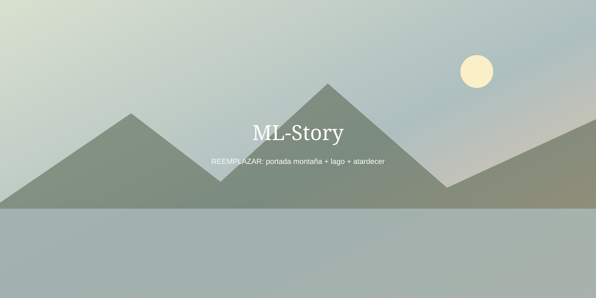
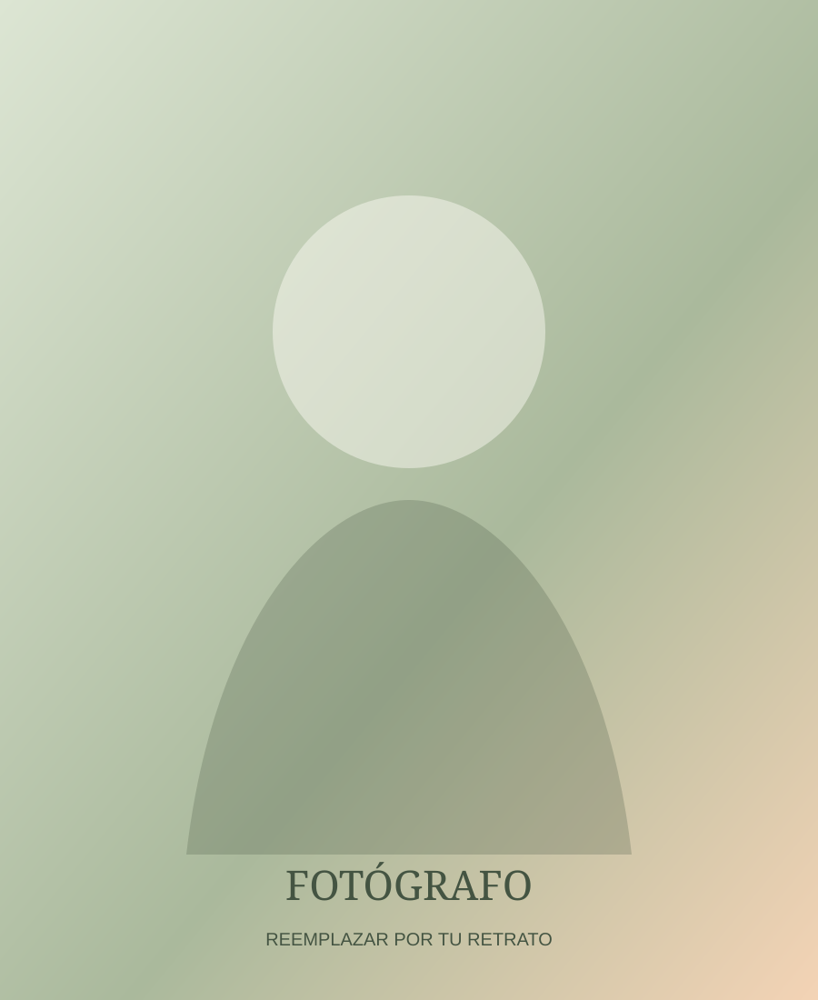

FOTO 360°
Panorama
Reemplazá el panorama ficticio por una imagen equirectangular 2:1. El README explica cómo activar un visor WebGL.
FOTOGRAFÍA · HISTORIAS · VIDA
Montañas, lagos, personas y atardeceres convertidos en historias visuales.
Explorar galeríaExplorar 360°
ENCUENTROS · NUEVOS COMIENZOS
Una nueva historia abre sus puertas.
Vista de muestra con paisajes de MILU. Próximamente, las fotos de la inauguración.
DOS PERSONAS · UNA HISTORIA
Los gestos, los encuentros y la emoción de un día irrepetible.
Vista de muestra con paisajes de MILU. Próximamente, nuestras historias de boda.
UNA MIRADA · MUCHAS HISTORIAS
Un recorrido entre montañas, luz y momentos que invitan a quedarse.
FOTOGRAFÍAS
Instantes que se convierten en historias.
MÁS ALLÁ DE LA IMAGEN
Series fotográficas con una narrativa común.
EL PROCESO
Arrastrá sobre la imagen para comparar el original y la edición final.
EXPERIENCIAS INMERSIVAS
El proyecto deja preparados los lugares para fotografía 360° y video 360°.
Reemplazá el panorama ficticio por una imagen equirectangular 2:1. El README explica cómo activar un visor WebGL.
Carpeta preparada para tu MP4 360°. Para producción conviene hosting de video especializado.
HISTORIAS EN MOVIMIENTO
Videos normales, separados de las experiencias 360°.

MILUACERCA DE MÍ
Soy la fotógrafa detrás de MILU. Me interesa capturar momentos auténticos y transformar la luz, los paisajes y las personas en pequeñas historias visuales.
Mi fotografía busca un equilibrio entre naturaleza, emoción y sencillez. Montañas, lagos, retratos y atardeceres forman parte de una misma idea: conservar esos instantes que muchas veces duran apenas unos segundos.
Para personalizar esta sección, reemplazá assets/photos/about/photographer.svg por tu retrato y editá este texto en index.html.
HABLEMOS
Contacto directo por WhatsApp o email.
HISTORIAS COMPARTIDAS
Gracias por dejarme ser parte de tu historia.
Cargando reseñas…
HISTORIA